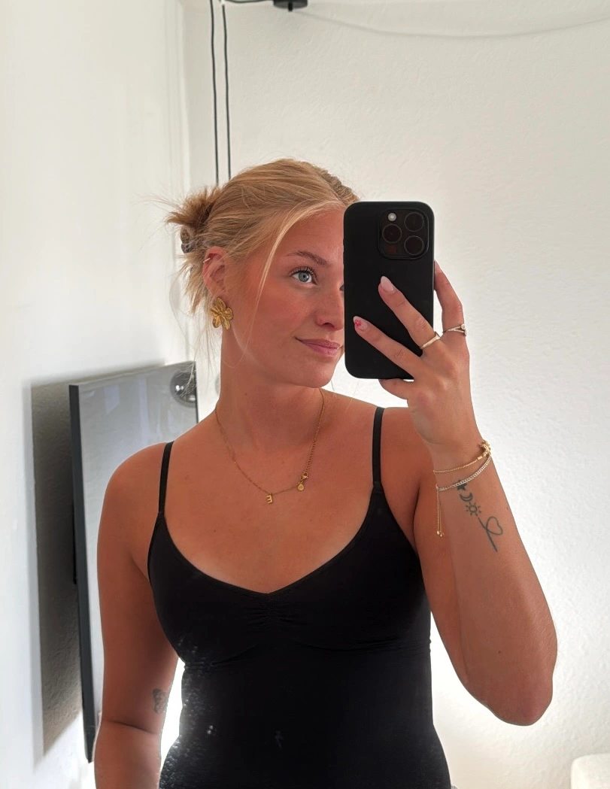

OM MIG

Mit navn er Erica Thygesen, jeg er 23 år gammel og studere Multimediedesigner uddannelsen på Erhvervsakademi København.
I 2020 blev jeg færdig med en EUX business på U/NORD Frederikssund. Jeg arbejder sideløbende i H&M som salgsassistent. I 2023 blev jeg forfremmet til visual merchandiser, som omfatter indretning af butikkerne mm. Mit arbejde der har gjort jeg har fået en mere æstetisk og visuel forståelse, men dette er dog noget jeg stadig ønsker at blive bedre til.
Mit 1. semester på EK har været meget læringsrigt. Jeg har udviklet mig design mæssigt en hel del. Jeg har fået viden og en forståelse indenfor en masse kreative redskaber, som jeg kan sidde og nørkle med, hvilket er noget jeg værdsætter
ekstremt meget.
Jeg har desuden brugt 1. semester på at styrke mine faglige kompetencer og anvende de fremgangsmåder, vi har arbejdet med, dette har udviklet min evne til at arbejde mere struktureret. Udover dette har jeg lært en
masse søde nye mennsker og kende.